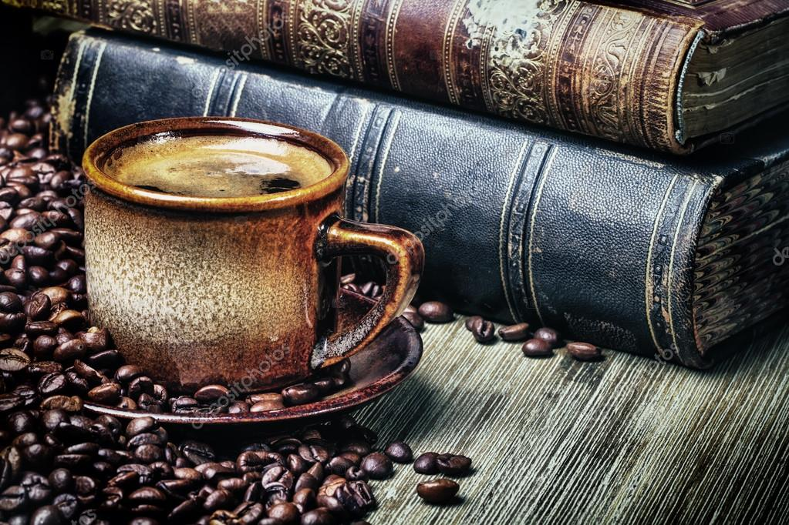

Blog
cafetera :) me

La historia del café
El café es una bebida popular que se consume en todo el mundo, pero ¿cómo se originó? La historia del café se remonta a la antigua Etiopía, donde se cuenta una leyenda sobre un pastor de cabras que notó que sus animales se ponían más activos después de comer ciertas bayas. Después de probar las bayas él mismo, se sintió más alerta y animado, y así nació la idea de preparar una bebida con ellas.
Desde entonces, el café se ha extendido por todo el mundo y ha jugado un papel importante en la cultura y la economía de muchos países. Desde los cafés al aire libre de Turquía hasta los cafés elegantes de París, el café ha sido una bebida que ha unido a las personas y ha inspirado la creatividad y la innovación.